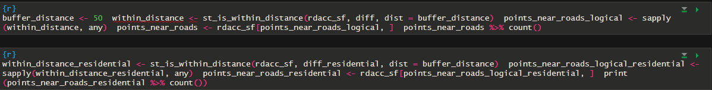
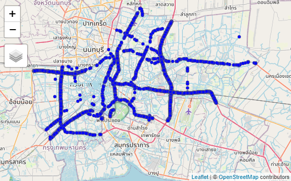
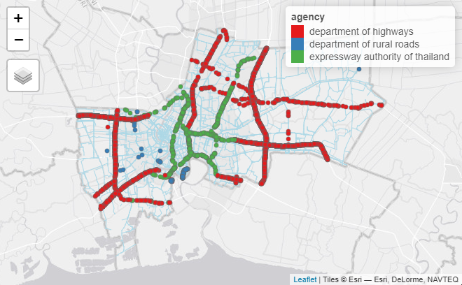
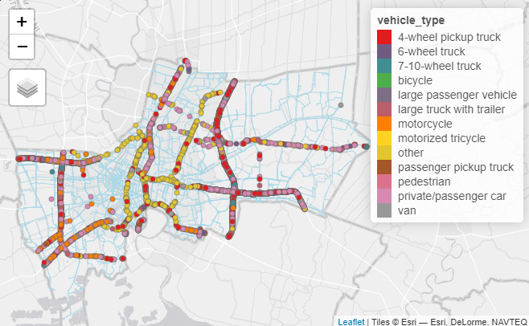
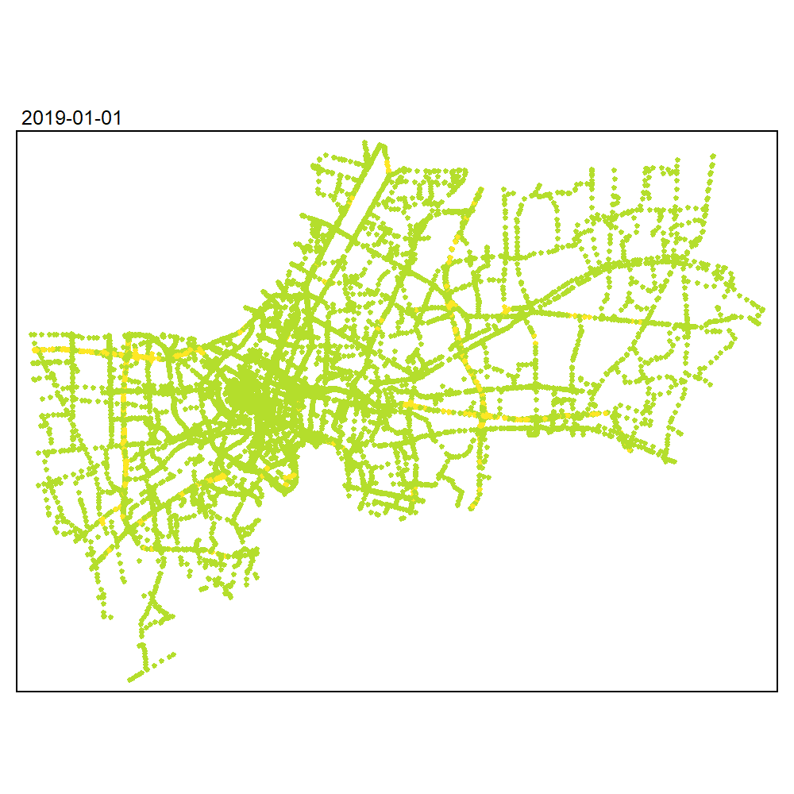

pacman::p_load(sf, tidyverse, tmap, ggplot2, ggstatsplot, dplyr, spatstat, raster, readxl, spNetwork, rgeos, future, future.apply, RColorBrewer, RcppArmadillo, classInt, viridis, gifski, magma)Take-Home Exercise 1
1. OVERVIEW
Thailand has some of the most dangerous roads in the world, with around 20,000 people dying in road accidents each year—about 56 deaths a day, according to the World Health Organization (WHO). This makes road safety a critical issue in the country. Geospatial analytics can help by mapping where accidents happen, what types of roads are most dangerous, and identifying risk factors. By using this data, authorities can focus on improving dangerous areas, making roads safer, and planning better traffic enforcement. In a country with such high accident rates, geospatial analysis is a powerful tool to help reduce fatalities and protect lives.
This Take-Home Exercise attempts to:
Visualize the spatio-temporal dynamics of road traffic accidents in BMR using appropriate statistical graphics and geovisualization methods.
Conduct detailed spatial analysis of road traffic accidents using appropriate Network Spatial Point Patterns Analysis methods.
To conduct detailed spatio-temporal analysis of road traffic accidents using appropriate Temporal Network Spatial Point Patterns Analysis methods.
2. GETTING STARTED
2.1 Installing the R Packages
This code chunk uses p_load() of the pacman package (stands for Package Manager) to check if the following packages are installed in the computer. The packages will then be launched into R.
2.2 Importing the Datasets
This Take-Home Exercise will utilize 3 datasets. They are:
Thailand Road Accident [2019-2022] on Kaggle
Let’s use the sf package to import the datasets as sf data frames.
BOUNDARIES DATA
Let’s import the boundaries data using the code chunk below. This will filter out the boundaries in the different provinces under the Bangkok Metropolitan Region.
boundaries <- st_read(dsn = "data/tha_adm_rtsd_itos_20210121_shp", layer = "tha_admbnda_adm1_rtsd_20220121") %>%
filter(!is.na(geometry)) %>%
filter(ADM1_EN %in% c('Bangkok', 'Samut Prakan', 'Pathum Thani', 'Nonthaburi', 'Nakhon Pathom', 'Samut Sakhon' ))ROAD ACCIDENT DATA
This code chunk reads the CSV file of road accident data for Thailand. It filters out rows with missing or empty longitude and latitude values and then keeps only accidents that occurred in specific provinces around the Bangkok Metropolitan Region.
It then converts the data into a spatial object (sf), assigning geographic coordinates (longitude and latitude) in the WGS 84 coordinate system (EPSG:4326) and transforms it to UTM zone 47N (EPSG:32647) for further spatial analysis.
rdacc_sf <- read_csv("data/thai_road_accident_2019_2022.csv") %>%
filter(!is.na(longitude) & longitude != "",
!is.na(latitude) & latitude !="") %>%
filter(province_en %in% c('Bangkok', 'Samut Prakan', 'Pathum Thani', 'Nonthaburi', 'Nakhon Pathom', 'Samut Sakhon' )) %>%
st_as_sf(coords= c("longitude", "latitude"),
crs=4326) %>%
st_transform(crs=32647)ROAD NETWORK DATA
Next dataset we will import is the road network data.
I filtered the road data based on a list of highway classifications from the WikiProject Thailand page, which includes road types such as ‘motorway,’ ‘trunk,’ ‘primary,’ and others. I chose only the highways which provide access to various types of vehicles, including motorcars, motorcycles, goods vehicles, heavy goods vehicles (HGV), and public service vehicles (PSV).


Loading this dataset shows that there are 1551498 records. That’s a lot! Let us check which ones to remove in the next section.
Note! To conserve space during rendering and when committing changes, I have included only images of some of the code implementations.
3. GEOSPATIAL DATA WRANGLING
3.1 CHANGING COORDINATE SYSTEMS
This code first sets the coordinate reference system (CRS) of the throad dataset to EPSG:4326 (WGS 84), which is a common geographic coordinate system. Then, both the throad and boundaries datasets are transformed to the UTM Zone 47N projection (EPSG:32647), which is a local projection for Thailand that is suitable for spatial analysis and accurate distance measurements. This ensures that both datasets are in the same CRS for further spatial operations.
We have also done this at the start when we created rdacc_sf.

3.2 ROAD ACCIDENT DATA
Let’s check the number of road accidents in each province listed in the province_en column of the rdacc_sf dataset.
rdacc_sf %>% count(province_en)I am selecting Bangkok for analysis because it has a comparably higher number of road accidents (6,089) compared to other provinces, such as Samut Prakan (2,241) and Nakhon Pathom (891).
rdacc_sf <- rdacc_sf %>%
filter(province_en %in% c('Bangkok'))3.3 BOUNDARIES DATA
Since we have already filtered the accident data to only include Bangkok, this boundary dataset must also be filtered to Bangkok to ensure consistency in the analysis.
boundaries <- st_read(dsn = "data/tha_adm_rtsd_itos_20210121_shp", layer = "tha_admbnda_adm1_rtsd_20220121") %>% filter(!is.na(geometry)) %>% filter(ADM1_EN %in% c('Bangkok'))3.4 ROAD NETWORK DATA
Based on the data, the category that stands out is residential, containing over 1 million records, while the others, typically classified as highways without many walkroads, have significantly fewer records.

To further analyze this, we will check which areas have more accidents by applying a buffer to these road types.
Basically, the goal is to check whether accidents involve accidents TO PEOPLE vs accidents BETWEEN VEHICLES.

The code chunk below performs a spatial join, specifically an intersection between the road network (throad and throad_residential)and the boundaries (boundaries) dataset. This will return only the parts of the road network that are within the boundaries (which is filtered to only “Bangkok”).
Essentially, this step ensures that only the roads within Bangkok are retained, and any road segments outside the specified boundaries are excluded from the result stored in diff and diff_residential.

Checking the buffer for accidents in both expressway (non-residential) and residential areas reveals that non-residential areas have around 6,075 accidents, while residential areas have around 2,397 accidents. This indicates that there are significantly more accidents occurring near expressways compared to residential areas, suggesting that high-traffic roads, such as expressways, may be more prone to accidents despite the higher population density in residential zones.

Let’s use diff and not diff_residential in the calculation of NKDE and TKNDE, meaning we are not using residential data to check for hotspot areas for traffic accidents in Bangkok.
throad_filtered <- st_read(dsn = "data/hotosm_tha_roads_lines_shp", layer = "hotosm_tha_roads_lines_shp") %>%
filter(!is.na(geometry)) %>%
filter(highway %in% c('motorway', 'motorway_link', 'trunk', 'trunk_link',
'primary', 'primary_link', 'secondary', 'secondary_link',
'tertiary', 'tertiary_link', 'unclassified', 'living_street',
'road'))throad_filtered <- st_set_crs(throad_filtered, 4326)
throad_filtered <- st_transform(throad_filtered, 32647)
boundaries <- st_transform(boundaries, 32647)diff <- st_intersection(throad_filtered, boundaries)For the next two code chunks, they provide additional insights and essentially emphasize the greater need to focus on non-residential areas, rather than residential ones, as they highlight the higher frequency of accidents in these high-traffic regions. This suggests that focusing on expressways and similar roads may yield more actionable insights than studying residential areas.
3.5 Saving and Writing RDS
I used readRDS and writeRDS functions to efficiently manage and preserve the exact state of R objects, ensuring that all attributes such as data types and row names are maintained accurately across sessions.
saveRDS(diff, "diff.rds")
saveRDS(rdacc_sf, "rdacc_sf.rds")diff <- readRDS("diff.rds")
rdacc_sf <- readRDS("rdacc_sf.rds")4. VISUALIZING THE GEOSPATIAL DATA
GENERAL
This is our final geospatial data before calculating NKDE and TNKDE. This code sets the tmap mode to interactive viewing and visualizes the road segments (diff) in purple and the accident points (rdacc_sf) in yellow.
tmap_mode('view') tm_shape(diff) +
tm_lines(col="lightblue", size=0.02)+
tm_shape(rdacc_sf) +
tm_dots(col="blue", size=0.02)
BY AGENCY
Based on the map, when visualizing accidents by agency, it is clear that most are reported under the agency of the Department of Highways. In terms of policy creation and implementation, this suggests that the government can focus more on these roads and the agency’s involvement. Additionally, there is an apparent concentration of roads specific to this agency, which could be a point of investigation to understand why accidents are primarily occurring on these roads and how they can be addressed.
tm_shape(diff) +
tm_lines(col = "lightblue") +
tm_shape(rdacc_sf) +
tm_dots(col = "agency", palette = "Set1", size = 0.02)
BY VEHICLE
tm_shape(diff) +
tm_lines(col = "lightblue") +
tm_shape(rdacc_sf) +
tm_dots(col = "vehicle_type", palette = "Set1", size = 0.02)
We can observe that certain colors stand out on the map, indicating potential patterns in vehicle-related accidents. The pink dots, representing private/passenger cars, are scattered across different areas, while the yellow dots, representing motorized tricycles (commonly known as tuk tuks, which are famous among tourists for being fast vehicles), are concentrated in the central region. This may be due to the presence of tourist spots and high-traffic areas. Given their speed, tuk tuks may have a higher chance of being involved in accidents.
Similarly, the orange dots, representing motorcycles, are concentrated in the southern part of the map. These observations suggest that certain vehicle types may be more prone to accidents in specific areas, which warrants further investigation.
5. CALCULATING NKDE
Let’s now calculate the NKDE to potentially identify hotspot areas that have high concentrations of traffic road accidents along the Bangkok City road network. We hope to specify network segments that may require attention or intervention.
lixels <- lixelize_lines(sf::st_cast(diff, "LINESTRING"),750,mindist = 375)samples <- lines_center(lixels)NKDE FIXED BANDWIDTH
bws_selection_cv <- bw_cv_likelihood_calc(
bws = seq(1000,4000,100),
lines = sf::st_cast(diff, "LINESTRING"), events = rdacc_sf,
w = rep(1,nrow(rdacc_sf)),
kernel_name = "quartic", method = "discontinuous",
diggle_correction = FALSE, study_area = NULL,
max_depth = 8,
digits=2, tol=0.1, agg=5,
sparse=TRUE, grid_shape=c(1,1),
verbose=FALSE, check=TRUE)[1] 1knitr::kable(bws_selection_cv)| bw | cv_scores |
|---|---|
| 1000 | -26.02321 |
| 1100 | -24.64536 |
| 1200 | -23.60505 |
| 1300 | -22.89627 |
| 1400 | -22.40751 |
| 1500 | -21.35188 |
| 1600 | -21.08328 |
| 1700 | -20.81262 |
| 1800 | -20.64961 |
| 1900 | -20.14787 |
| 2000 | -20.20357 |
| 2100 | -19.58824 |
| 2200 | -19.18807 |
| 2300 | -19.01187 |
| 2400 | -18.72223 |
| 2500 | -18.54543 |
| 2600 | -18.58922 |
| 2700 | -18.52070 |
| 2800 | -18.56302 |
| 2900 | -18.60437 |
| 3000 | -18.64468 |
| 3100 | -18.68396 |
| 3200 | -18.72223 |
| 3300 | -18.64742 |
| 3400 | -18.46054 |
| 3500 | -18.38194 |
| 3600 | -18.41571 |
| 3700 | -18.44907 |
| 3800 | -18.48170 |
| 3900 | -18.40188 |
| 4000 | -18.43267 |
In this code, future::plan(future::multisession(workers=2)) is used to enable parallel processing, allowing the NKDE calculation to run on two separate cores (workers). This speeds up the computation by distributing the workload across multiple processors, which is particularly useful when working with large datasets and complex calculations like NKDE.
The method = “continuous” is selected because it offers the best of both worlds by providing a smooth and seamless density estimation along the road network while still capturing the detailed distribution of accidents. It ensures that there are no artificial breaks between road segments, making the analysis more accurate and realistic in representing how accidents occur across the network.
future::plan(future::multisession(workers=2))
densities_mc <- nkde.mc(sf::st_cast(diff, "LINESTRING"),
events = rdacc_sf,
w = rep(1,nrow(rdacc_sf)),
samples = samples,
kernel_name = "quartic",
bw = 3500, div= "bw",
method = "continuous",
digits = 1, tol = 1,
grid_shape = c(2,2),
max_depth = 8,agg = 10,
sparse = TRUE,verbose = FALSE)
if (!inherits(future::plan(), "sequential")) future::plan(future::sequential)samples$density <- densities_mcsamples$density <- samples$density*1000samples2 <- samples[order(samples$density),]colorRamp <- brewer.pal(n = 7, name = "Spectral")
colorRamp <- rev(colorRamp)tmap_mode('view')
tm_shape(diff) +
tm_lines("black")+
tm_shape(samples2) +
tm_dots("density", style = "kmeans", palette = colorRamp, n = 7, size = 0.04)
The plot above reveals several red areas, indicating locations with a higher concentration of accidents. Upon closer inspection, many of these high-density areas are located at or near intersections, suggesting that intersections may be key hotspots for accidents. This highlights the need for further investigation into intersection safety and potential improvements in traffic management at these critical points.
ADAPTIVE BANDWIDTH
adapt_densities <- nkde.mc( lines = sf::st_cast(diff, "LINESTRING"),
events = rdacc_sf,
w = rep(1, nrow(rdacc_sf)),
samples = samples,
kernel_name = "quartic",
bw = 3500, div = "bw",
adaptive = TRUE,
trim_bw = 1000,
method = "discontinuous",
digits = 1, tol = 5,
grid_shape = c(2, 2),
max_depth = 16, agg = 5,
sparse = TRUE, verbose = FALSE )
if (length(adapt_densities$k) == nrow(samples)) {
samples$density <- adapt_densities$k } else { stop("Mismatch between density results and number of samples. Please check the input data.") }tm_shape(diff) +
tm_lines("black")+
tm_shape(samples) +
tm_dots("density", style = "kmeans", palette = colorRamp, n = 7, size = 0.04)
In the adaptive bandwidth density plot, no red areas are observed, indicating that the density of accidents is more evenly distributed. The adaptive bandwidth adjusts to local conditions, smoothing the density in areas with fewer accidents and concentrating on high-density areas, which may explain the absence of extreme hotspots. This approach provides a more balanced view of accident distribution across the network, but it may also mask the intensity of certain critical areas, such as intersections, which were more visible in the fixed bandwidth plot.
6. CALCULATING TKNDE
Let’s now explore the temporal dimensions of the data. We’ll begin by performing some data wrangling to prepare it for analysis, such as adding datetime information and separating it into date, month, and weekday components. 6. CALCULATING TKNDE
Let’s now explore the temporal dimensions of the data. We’ll begin by performing some data wrangling to prepare it for analysis, such as adding datetime information and separating it into date, month, and weekday components.
rdacc_sf$Date <- as.Date(rdacc_sf$incident_datetime)
start <- as.Date("2019-01-01")
rdacc_sf$difftime <- difftime(rdacc_sf$Date, start, units = "days")
rdacc_sf$difftime <- as.numeric(rdacc_sf$difftime)class(rdacc_sf$incident_datetime)min(rdacc_sf$incident_datetime)PER MONTH
months <- as.character(1:12)
months <- ifelse(nchar(months)==1, paste0("0", months), months)
months_starts_labs <- paste("2019/",months,"/01", sep = "")
months_starts_num <- as.POSIXct(months_starts_labs, format = "%Y/%m/%d")
months_starts_num <- difftime(months_starts_num, start, units = "days")
months_starts_num <- as.numeric(months_starts_num)
months_starts_labs <- gsub("2019/", "", months_starts_labs, fixed = TRUE)rdacc_sf$high_fatalities <- ifelse(rdacc_sf$number_of_fatalities >= 1, "High", "Low")The plot below shows accidents per month.
ggplot(rdacc_sf) +
geom_histogram(aes(x = difftime), bins = 30, color = "white", alpha = 0.5) + scale_x_continuous( breaks = months_starts_num, labels = months_starts_labs,
limits = c(min(months_starts_num), max(months_starts_num)),
expand = c(0, 0) ) + ggtitle("Accidents per Month")Based on the histogram, January appears to have the highest number of accidents, with notable peaks also in April and July. In contrast, December shows a lower frequency of accidents. These trends might reflect seasonal or behavioral patterns that influence road safety throughout the year.
The high number of accidents in January may be linked to New Year celebrations, while the peaks in April could be associated with Songkran, Thailand’s water festival, which is known for increased travel and festivities. The lower number of accidents in December might reflect reduced activity as the year comes to a close.
ggplot(rdacc_sf) +
geom_histogram(aes(x = difftime, fill = high_fatalities), bins = 30,
color = "white", alpha = 0.5) +
scale_x_continuous( breaks = months_starts_num,
labels = months_starts_labs,
limits = c(min(months_starts_num),
max(months_starts_num)),
expand = c(0, 0) ) +
scale_fill_manual(values = c("High" = "red", "Low" = "blue")) +
theme(axis.text.x = element_text(angle = 45, hjust = 1))Although the number of fatalities is relatively small compared to non-fatal accidents, each loss of life is significant. The map below highlights the areas where fatalities have occurred, emphasizing the importance of addressing these critical locations to improve road safety and save lives.
fatalities_data <- rdacc_sf %>%
filter(number_of_fatalities > 0)
tmap_mode("view")
tm_shape(fatalities_data) +
tm_dots(col = "red", size = 0.1) +
tm_layout(title = "Locations with Fatalities")# Prepare weights and temporal samples
w <- rep(1, nrow(rdacc_sf))
samples_temporal <- seq(0, max(rdacc_sf$difftime), 0.5)
# Calculate temporal kernel density estimates at multiple bandwidths
time_kernel_values <- data.frame(
bw_10 = tkde(rdacc_sf$difftime, w = w, samples = samples_temporal, bw = 10, kernel_name = "quartic"),
bw_20 = tkde(rdacc_sf$difftime, w = w, samples = samples_temporal, bw = 20, kernel_name = "quartic"),
bw_30 = tkde(rdacc_sf$difftime, w = w, samples = samples_temporal, bw = 30, kernel_name = "quartic"),
bw_40 = tkde(rdacc_sf$difftime, w = w, samples = samples_temporal, bw = 40, kernel_name = "quartic"),
bw_50 = tkde(rdacc_sf$difftime, w = w, samples = samples_temporal, bw = 50, kernel_name = "quartic"),
bw_60 = tkde(rdacc_sf$difftime, w = w, samples = samples_temporal, bw = 60, kernel_name = "quartic"),
time = samples_temporal
)
# Reshape data for plotting
df_time <- reshape2::melt(time_kernel_values, id.vars = "time")
df_time$variable <- as.factor(df_time$variable)
# Plotting kernel density estimates
ggplot(data = df_time) +
geom_line(aes(x = time, y = value)) +
scale_x_continuous(
breaks = months_starts_num,
labels = months_starts_labs,
limits = c(min(months_starts_num), max(months_starts_num))
) +
facet_wrap(
vars(variable),
ncol = 2,
scales = "free"
) +
theme(axis.text = element_text(size = 5))The series of plots above depict temporal kernel density estimates of road accidents in Thailand over a year, differentiated by various bandwidth settings from 10 to 60. The varying bandwidths reveal different levels of data smoothness, where smaller bandwidths capture more abrupt fluctuations in accident occurrences, potentially highlighting seasonal spikes or specific events. Larger bandwidths smooth out these details, indicating broader trends, such as increased accidents during peak tourist seasons or major festivals like Songkran, which are obscured in higher bandwidth plots.
WEEKDAY
rdacc_sf$day_of_week <- weekdays(as.Date(rdacc_sf$incident_datetime))
rdacc_sf$day_of_week <- factor(rdacc_sf$day_of_week, levels = c("Monday", "Tuesday", "Wednesday", "Thursday", "Friday", "Saturday", "Sunday"))In terms of accidents per day of the week, the data shows that Fridays and Saturdays have the highest number of incidents. This could be due to increased traffic and social activities during the weekend, contributing to higher accident rates on these days. Understanding these trends can help target road safety measures more effectively during high-risk periods.
ggplot(rdacc_sf) +
geom_bar(aes(x = day_of_week), color = "white", fill = "steelblue", alpha = 0.7) +labs(x = "Day of the Week", y = "Number of Accidents") +
theme_minimal() +theme(axis.text.x = element_text(angle = 45, hjust = 1))7. SPATIO-TEMPORAL ANALYSIS
Now let’s head on to spatio-temporal analysis.
According to the “leave-one-out cross-validation” method, the optimal bandwidth settings are determined to be 4000 meters and 70 days. This is based on the cv_scores result below.
cv_scores <- bw_tnkde_cv_likelihood_calc(
bws_net = seq(2500, 4000, by = 100),
bws_time = seq(10, 70, by = 10),
lines = sf::st_cast(diff, "LINESTRING"),
events = rdacc_sf,
time_field = "difftime",
w = rep(1, nrow(rdacc_sf)),
kernel_name = "quartic",
method = "continuous",
diggle_correction = FALSE,
study_area = NULL,
max_depth = 10,
digits = 2,tol = 0.1,
agg = 10,
sparse = TRUE,
grid_shape = c(2, 2),
sub_sample = 1, verbose = FALSE, check = TRUE )Based on this, the optimal set of bandwidths is 4000m and 70 days.

The code first defines a sequence of sample times from 0 to the maximum difference in time (difftime) in increments of 10, which is used for temporal analysis of road accidents in rdacc_sf. Then, it employs the tnkde function to perform a spatio-temporal kernel density estimation on road network data, utilizing the defined sample times and locations (samples) to calculate densities, adjusting for both space (bw_net) and time (bw_time) with an adaptive approach to better capture the density patterns over the network and time. The inputs are from the method we used above.
sample_time <- seq(0, max(rdacc_sf$difftime), by = 10)tnkde_densities <- tnkde( lines = sf::st_cast(diff, "LINESTRING"),
events = rdacc_sf,
time_field = "difftime",
w = rep(1, nrow(rdacc_sf)),
samples_loc = samples,
samples_time = sample_time,
kernel_name = "quartic",
bw_net = 4000, bw_time = 70,
adaptive = TRUE,
trim_bw_net = 900,
trim_bw_time = 80,
method = "discontinuous",
div = "bw", max_depth = 10,
digits = 2, tol = 0.01,
agg = 15, grid_shape = c(2, 2), verbose = FALSE )The code chunks below will be used to visualize the spatio-temporal values compressed into a gif animation.
all_densities <- c(tnkde_densities$k)
color_breaks <- classIntervals(all_densities, n = 10, style = "quantile")start_date <- as.Date(start)
all_maps <- lapply(1:ncol(tnkde_densities$k), function(i) {
date <- start_date + sample_time[i]
samples$density <- tnkde_densities$k[, i]
map1 <- tm_shape(samples) +
tm_dots(col = "density", size = 0.01,
breaks = color_breaks$brks, palette = viridis(10)) +
tm_layout(legend.show = FALSE, main.title = as.character(date),
main.title.size = 0.5)
return(map1)
})tmap_animation(all_maps, filename = "images/animated_map.gif",
width = 1000, height = 1000, dpi = 300, delay = 50)Creating frames
================================================================================
Creating animation
Animation saved to C:\loriellemalveda\ISSS626-GAA\Take-home_Ex\Take-home_Ex01\images\animated_map.gif knitr::include_graphics("images/animated_map.gif")
In this animation, we observe the dynamic nature of hotspot locations over time. As the frames progress, you can clearly see how the hotspots shift, evolve, and sometimes even disappear.
This analysis has illustrated the complex interplay between space and time in the distribution of traffic accidents in Bangkok. The use of spatio-temporal kernel density estimation revealed that not only do the intensities of hotspots vary, but their locations also shift over time, reflecting underlying temporal trends that were not apparent in purely spatial analyses.
These are crucial for developing targeted strategies and interventions that are responsive to the temporal shifts in patterns, to ensure that resources are allocated efficiently and effectively.